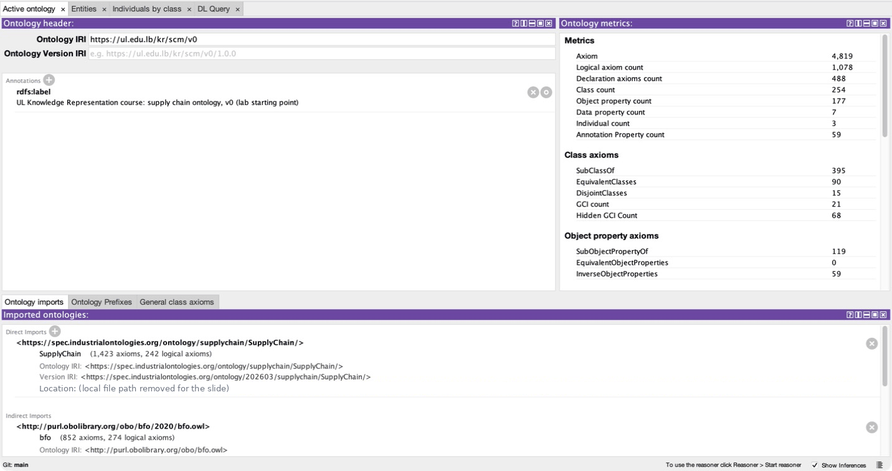
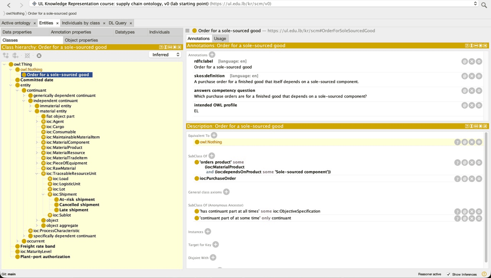
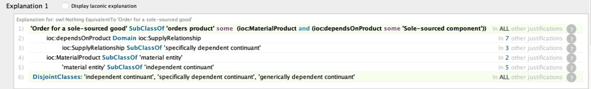
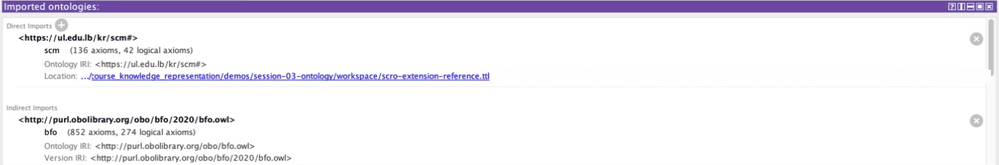
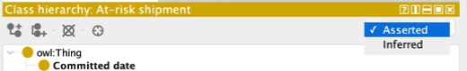

Today we write down what our supply chain words mean, so that a program can check them and find our mistakes. We also build on ontologies other people have already published.
Ontology A written list of what the words of one subject area mean, for example shipment, carrier and handled by. OWL Web Ontology Language: a set of ready made words, such as some and only, for writing those meanings so that a program can compute with them. Reasoner A program that works out the facts that follow from what you wrote, and reports when what you wrote contradicts itself. Protégé The free desktop editor for ontologies used in the lab.
This session runs long on purpose (about 240 minutes): it carries the ontology the rest of the course builds on.
python fetch_ontologies.py once in demos/session-03-ontology/. If not, do it during Part 1; the lab needs it.The 9,215 Brunel orders as a graph you can query (Session 2), where every fact is a triple: subject, predicate, object. And the business rules found in the data (Session 1).
Nothing tells a machine what late, carrier or at risk mean. Here, at risk means handled by a sanctioned carrier (one banned from doing business). Each program has its own definition of late.
Three minutes. I point at Session 3 in the row: this is where the course stops storing data and starts describing what it means.
By the end you can write definitions in Protégé, check them with a program, and fix the mistake it finds.
The mistake is in our own ontology: a written list of what the words of a subject area mean. Each new word is defined in a green box on the slide where it first appears.
BFO One of three published ontologies we build on (with IOF Core and SCRO), explained in Part 1.
I name the payoff early: in the lab the reasoner reports one of our classes as unsatisfiable, and before the end of the session you will know exactly why and will have seen it fixed.
The disagreement is in the word, not in the data. An ontology is a written list of what such words mean. This part explains what it is, what it is written in, and how it relates to databases, knowledge graphs and reasoners.
Ten seconds. I read the headline, let it hang, and move on.
Days it really took (Days real) are more than the days promised (Days scheduled).
The dataset's own column Delivery Status says “Late delivery”.
Days it really took are more than one day above the days promised.
Every number is correct: the meaning of “late” lives in people's heads, not in the data. A dashboard, a model and a report can each pick a different one, and nobody notices.
Write the meaning down once, precisely, so every program reads it the same way. That is what an ontology is for.
Four minutes. All three numbers were computed on 2026-09-22 from the real file demos/data/dataco/DataCoSupplyChainDataset.csv: 65,752 distinct orders; 37,698 with real days > scheduled (57.3%); 36,048 labelled "Late delivery" (54.8%); 15,578 more than one day late (23.7%).
Real Brunel order and carrier (Sessions 1 and 2). V444_1 is an anonymised code, not a company; flagging it as sanctioned is our teaching choice.
Five minutes. I walk the picture in plain words: "this shipment is a shipment; it is handled by carrier V444_1; V444_1 is a sanctioned carrier; every sanctioned carrier is a carrier". The lab file sample-shipments.ttl holds exactly these individuals.
| Word | What it is | A real line from our files |
|---|---|---|
| RDF | The format. Every fact is written as three parts: subject, predicate, object. RDF says nothing about meaning. (Session 2) | <…/1447291369.7> ul:handledBy carrier:V444_1 . |
| RDFS | A small set of ready made words for describing kinds of things: subClassOf, domain, range, label. Written in RDF. (Session 2) | ul:SanctionedCarrier rdfs:subClassOf ioc:Carrier . |
| OWL | A bigger set of ready made words with an exact meaning, so a reasoner (slide 15) can compute with them. It includes the RDFS words and adds some, only, exactly, disjoint (no shared member), equivalent. | ul:LateShipment owl:disjointWith ul:CancelledShipment . |
| Ontology | The content: all the statements that say what the words of one subject area mean. Not a language or a file format; it is stored as an RDF file. | scro-extension-reference.ttl |
Prefixes: ul: our names, ioc: the published ontology SCRO (slide 9), rdfs: owl: the RDFS and OWL words. Lines are shortened.
The one sentence to keep: OWL is not an ontology. It is the language you write one in, the way English is not an essay.
“Every sanctioned carrier is a carrier” needs only RDFS. “At risk means a shipment handled by some sanctioned carrier” needs OWL.
Four minutes. Everything on this slide answers "what is the difference between all these words". RDF is the alphabet and grammar, RDFS and OWL are vocabularies, the ontology is the essay. The data from Session 2 is written in the same RDF, so an ontology and a data set can sit in one file or two.
| Database schema | Ontology | Knowledge graph | |
|---|---|---|---|
| What it holds | Tables, columns, keys | Classes, properties, definitions | The facts (orders, carriers, plants) together with an ontology |
| An unregistered shipment | The insert is refused | Accepted. A reasoner can work out its type (Part 3, slide 23) | Accepted, and the ontology adds the meaning |
| A missing fact means | Not true | Unknown (open world) | Unknown, unless a check is added |
| Who checks the data | The database, on every insert | Nobody: an ontology adds facts and refuses nothing | Session 4 adds checks called shapes that refuse bad data |
| Written as | SQL | RDF triples using RDFS and OWL words | RDF triples |
Four minutes. The shipment of order 1447311670.7 comes back in Part 3: it is not in the shipment table, so SQL refuses it, while the ontology accepts it. In Session 4 the checking job comes back as shapes.
Upper ontology: a very general list of kinds of things, such as things that last and things that happen. BFO is one.
BFO is the base layer. It says what kinds of things exist at all.
IOF Core adds industry concepts on top of BFO.
SCRO adds supply chain classes on top of IOF Core, such as Shipment and Carrier.
“On top of” means: our ontology and each layer import (load) the statements of the layer below, so their rules apply to us.
Someone else's shipment is then the same shipment as ours, and their tools and data work with our file.
Four minutes. I build the stack from the bottom in words. Part 4 goes into BFO's categories and into a real mistake that came from reusing a property.
workspace/ (IOF release 202603).Circle = class · dot = individual · a circle inside a circle = a subclass. Shipments 1447291369.7 and 1447311670.7 sit inside At-risk shipment (a sanctioned carrier handles them); shipment 1447385217.7 does not.
Four minutes. "Every at-risk shipment is a shipment" just says one circle sits inside the other; Part 2 adds definitions the same way.
Each line is a subclass of the line above it: every late shipment is a shipment. It joins two classes, so it is not the “is a” arrow of slide 6, which joins one particular thing to its class.
If Shipment has a weight, then every late, cancelled and at risk shipment has one too. You write it once.
Four minutes. Protégé draws the same tree; you see it in the lab. I read two lines aloud as sentences: "every late shipment is a shipment", "every sanctioned carrier is a carrier".
All six of our classes are real classes in scro-extension-reference.ttl; Shipment and Carrier come from IOF SCRO.
Four minutes. 11.8 kg is this order's real weight in Brunel's OrderList (Session 2 stored it as ul:weight).
Same data as Session 2. The ABox is the same kind of data as the Session 2 graph (orders, carriers, plants). Both parts are RDF triples.
Why keep them apart. Change definitions without touching facts, and load new facts without touching definitions. In Session 5 the facts come from the database; the definitions stay hand written.
Four minutes. T is for terminology, A is for assertions. I say it once; it helps you remember.
Which of these is an ABox axiom, a fact about particular things?
Three minutes. If you picked c, that is the most useful wrong answer: it is about a property, not a particular thing, so it is a definition.

scro-extension-v0.ttl (v0, the lab's starting file). Right: 4,819 axioms in total, including those imported from SCRO, IOF Core and BFO. Below: the imports.Reasoner: a program that works out the facts that follow from what you wrote, and tells you when what you wrote contradicts itself.
Inference: a fact the reasoner derived that nobody wrote down.
Imports: our file loads the axioms of other published ontologies, so they count as part of ours (slide 9).
Our own file is small (about 30 classes and properties). Most axioms come from what it imports, and one wrong axiom anywhere can change the meaning of ours.
Four minutes. Nobody reads 4,819 axioms by hand. The reasoner does it in seconds and says which axioms are to blame.
Can all the axioms be true together? Late shipment and Cancelled shipment are disjoint: no shipment is in both. One placed in both: no.
Work out the full class tree, including links nobody wrote: At-risk shipment is defined as a Shipment handled by at least one Sanctioned carrier, so it is a subclass of Shipment.
Place each individual in its classes. Shipment 1447291369.7 is handled by sanctioned carrier V444_1, so it belongs to At-risk shipment.
Five minutes. I walk the three cards left to right. The middle one is real: the reasoner concludes At-risk shipment is a subclass of Shipment although nobody wrote that line. The right one is the lab's realization result (reference-outputs/realized-sample.txt).
At risk here means: a shipment handled by a sanctioned carrier. Protégé shows these six words on every screen.
Ten seconds. I read the headline, let it hang, and move on.
some Sanctioned carrier” is the class of shipments with at least one sanctioned carrier.| English | at least one carrier of this shipment is sanctioned |
| Protégé | 'handled by' some 'Sanctioned carrier' |
| Turtle | owl:someValuesFrom ul:SanctionedCarrier |
One definition, three notations: English, Protégé (quotes, because the names contain spaces), and the file’s Turtle (key line only).
The answer: shipment 1447291369.7 is in the class (V444_1 is sanctioned, tick); 1447385217.7 is not (V444_0 is not, cross). First half of the at risk definition.
Five minutes. I read the Protégé line aloud slowly, it is exactly what you will see in the Description panel in the lab.
only Sanctioned carrier” holds when every carrier a shipment has is sanctioned, even if it has none.| English | every carrier of this shipment, if it has any, is sanctioned |
| Protégé | 'handled by' only 'Sanctioned carrier' |
| Turtle | owl:allValuesFrom ul:SanctionedCarrier |
A shipment with no carrier recorded is still in the class: only says no link goes outside the circle, and with no links none does. only never says a link exists. To say both, write some and only.
Four minutes. I ask you first: does the shipment with no carrier satisfy it? Most of you will say no. The answer is yes. This is the single most common OWL misreading, and the lab's optional practice asks you to write some plus only correctly.
Members of both classes.
Shipment and ('handled by' some 'Sanctioned carrier') is the class At-risk shipment.
Members of either class.
'Late shipment' or 'Cancelled shipment'
Everything outside the class.
Carrier and not 'Sanctioned carrier'
Two classes that share no member: it builds no new class. An individual in both is a contradiction.
'Late shipment' DisjointWith 'Cancelled shipment'
Written the way Protégé shows it. Shaded area = the new class. The disjoint axiom is real, from our lab file; BFO adds many more (Part 4).
Five minutes. Disjointness is the one that makes errors findable: if one individual lands in both circles, the reasoner reports a contradiction instead of silently accepting it.
V444_0 ships on 2 routes, V44_3 on 3, V444_1 on 1. V444_0 and V44_3 count as multi route carriers only if their routes are declared different: OWL does not assume that two names are two different things.
Four minutes. Both classes are real in scro-extension-reference.ttl: ul:SoleSourcedComponent ('supplied by' exactly 1 Supplier) and ul:MultiRouteCarrier ('handles route' min 2 'Shipping route').
This part shows it on our ontology: a fact a database refuses and OWL accepts, definitions that place shipments in classes, and a class that cannot have any member.
Ten seconds. I read the headline, let it hang, and move on.
A reasoner is the program that works out facts that follow from what you wrote. Left: the database. Right: OWL, on the same fact.
CREATE TABLE shipment (id TEXT PRIMARY KEY);
CREATE TABLE carrier (id TEXT PRIMARY KEY);
CREATE TABLE handled_by (
shipment TEXT REFERENCES shipment(id),
carrier TEXT REFERENCES carrier(id));
INSERT INTO handled_by
VALUES ('1447311670.7', 'V444_1');
IntegrityError: FOREIGN KEY constraint failedWhy it fails: the shipment table holds only 1447291369.7. Shipment 1447311670.7 is not in it, so the foreign key refuses the row.
Same as RDFS in Session 2: domain and range add facts, they refuse nothing. Refusing data is a constraint. That is SHACL, Session 4's checking tool.
Five minutes. Left, the database: the shipment is not in the shipment table, so the row is refused. Right, OWL: nothing is refused, the reasoner concludes a type. Both sides are real: the database run is demos/session-03-ontology/closed_world_demo.py (output in reference-outputs/closed-world-demo.txt; the comment line in the code is added for the slide). The OWL side is the lab file sample-shipments.ttl, reasoned with ELK in the lab.
Every at risk shipment is handled by a sanctioned carrier, but not the reverse: a matching shipment is not placed in the class.
A shipment is at risk exactly when a sanctioned carrier handles it: a matching shipment is placed in the class.
| Real result (ELK) | 1447385217.7 V444_0 | 1447291369.7 V444_1 | 1447311670.7 V444_1 |
|---|---|---|---|
| At-risk is SubClassOf | no | no | no |
| At-risk is EquivalentTo | no | at risk | at risk |
ELK: a fast reasoner that understands only part of OWL (Part 5).
How to read it. Each column is a shipment. “no”: the reasoner did not place it in At-risk shipment. “at risk”: it did. V444_0 is not sanctioned, so shipment 1447385217.7 is correctly never at risk. The lab's first file used SubClassOf only.
Six minutes. With a SubClassOf class, nothing: no shipment is ever placed in it. With an EquivalentTo class, the reasoner does the classifying.
python realize_sample.py runs ROBOT on sample-shipments.ttl twice, once as shipped (EquivalentTo) and once with that one axiom turned into SubClassOf; output in reference-outputs/realized-sample.txt.Transitive: if A is part of B and B is part of C, the reasoner derives that A is part of C. (A generic picture, not course data: Brunel has no parts list.)
Functional: at most one value per thing, one order date per order. If a second, different date arrives, the ontology is inconsistent: the reasoner reports a contradiction.
Inverse: the same link read backwards. From “the shipment is handled by V444_1” the reasoner derives “V444_1 handles the shipment”.
Four minutes. Our file declares ul:deliveredAfter as the inverse of ul:committedBefore, a real example. Transitivity is how "which products contain a part from this plant" works at any depth (Session 1's sanction question).
The functional card: order 1447291369.7 really was ordered on 2013-05-26; the second date is what a careless second source might send.
Fill in the blanks
Three minutes. Blank 3 is the one that matters for the lab.

scro-extension-v0.ttl. Order for a sole-sourced good is selected (blue) under owl:Nothing; on the right, its Equivalent To entry is owl:Nothing too.Unsatisfiable class (impossible class): no individual could ever belong to it without a contradiction.
owl:Nothing: the empty class, with no members.
Asserted and Inferred: the class tree has two views. Asserted shows what we wrote; Inferred shows what the reasoner added. The screenshots show Inferred.
Nothing failed. The reasoner showed that our own definition asks for something impossible. Only this class is affected.
Four minutes. This is the moment of the lab, shown now so you do not panic when it happens on your screen. ELK reports one unsatisfiable class in v0; HermiT reports two (Part 5 explains why).
Imagine that after the reasoner runs, the Inferred class tree shows Late shipment under At-risk shipment, which nobody intended. Which computation surfaced it?
This is a hypothetical example; it does not happen in our file. The Inferred view is the class tree after the reasoner added its conclusions (slide 27).
Three minutes. Read the inferred tree as a claim about what you said. When it disagrees with what you meant, the model is wrong, not the reasoner.
Part 1 showed the stack: BFO, IOF Core, SCRO and our extension (slide 9). Here we look at BFO's categories and at a real mistake that came from reusing a property.
Ten seconds. I read the headline, let it hang, and move on.
A test. Can you ask “how long did it take?” Then it is an occurrent. Can you ask “where is it now?” Then it is a continuant.
Why it matters. BFO declares many pairs of classes disjoint (nothing can be in both). The next slides show the pair behind our unsatisfiable class.
The truck is an illustration: Brunel records carriers, not their trucks. The order is real.
Four minutes.
The rule that matters for the lab: BFO says these three kinds share no member, they are disjoint. A physical thing is never a feature of another thing and never a document.
Five minutes. Remember this for the unsatisfiable class two slides on.
python local_reasoner.py workspace/domain-mistake.ttl answers: “The ontology is inconsistent: it contradicts itself, so every answer is worthless.”
One unsatisfiable class (slides 27 and 34) is empty, and the rest of the ontology still works. An inconsistent ontology, as here, contradicts itself as a whole, so none of its answers can be trusted. The cause is the same kind of mistake: a domain applies to every thing that has the property.
Five minutes. I step through with the arrow keys; at step 2 I ask you what you expect before I show step 3.
demos/session-03-ontology/domain-mistake.ttl (reference-outputs/domain-mistake.txt). po88 is a purchase order from the Session 5 ERP seed data.
| 1 | Ours: the class orders some product that depends on some sole sourced component. |
| 2 | The property depends on product has the domain SupplyRelationship. |
| 3 | A supply relationship is a specifically dependent continuant. |
| 4 | Our product is a material product, a kind of material entity. |
| 5 | A material entity is an independent continuant. |
| 6 | BFO: independent, specifically dependent and generically dependent continuants are disjoint. |
Justification: the smallest set of axioms that together cause a conclusion; remove any one and it goes away. A class can have several; one is enough to fix. Only line 1 is ours, so the mistake is in how it uses SCRO. The next slide decodes lines 2 to 6.
Five minutes. I read the six lines aloud. The point now is the method: find the line that is ours. ROBOT's explain finds a different justification for the same class (reference-outputs/explain_v0_ELK.md).
Six minutes, the most important slide of Part 4. I step through slowly; at step 5 I ask you why the product cannot be both, and you use the earlier slides.
Brunel's carrier V444_1 is sanctioned. If another source has a different company also called V444_1 and we link the two with owl:sameAs, that company becomes sanctioned too, and all its shipments are at risk.
owl:sameAs: two names for exactly the same individual. The reasoner merges everything said about them.
owl:equivalentClass: two classes with exactly the same members. Every definition of one applies to the other. It is what Protégé calls EquivalentTo (slide 24).
Prefer rdfs:subClassOf (the “every X is a Y” link) until you can defend the equivalence. “Probably the same” is a similarity claim for Session 5's entity resolution (deciding which records describe the same real thing), with a confidence.
Four minutes. equivalentClass imports every axiom on the other side, which is exactly how the mistake on the previous slides happened, one level down.
This part covers the profiles first, then the method for building an ontology: write the questions, reuse, run both reasoners, fix the model.
Ten seconds. I read the headline, let it hang, and move on.
| Profile | Built for | Cannot say | Program that reasons |
|---|---|---|---|
| EL · the words some and and | Very large class trees | only, counting, not | ELK, fast |
| QL · query language | Asking questions of data kept in a relational database | counting, and several other words | Ontop (Session 5) rewrites a question into SQL |
| RL · rule language | Programs that apply if then rules | saying that an unnamed thing exists | rule engines |
| DL · description logic, all of OWL | Everything OWL can say | nothing, but can be slow | HermiT, complete |
Each class in our file records its profile in a ul:profile note: the profile is a decision you record, not something you discover later.
Five minutes. Description logic, the family of logics OWL is built on, is first order logic cut down so the reasoner is guaranteed to finish: that is the whole bargain.
| Reasoner | Unsatisfiable classes in v0 |
|---|---|
| ELK | Order for a sole-sourced good |
| HermiT | Order for a sole-sourced good Sole-sourced component |
Both reasoners find Order for a sole-sourced good (slide 34). Only HermiT also finds Sole-sourced component. A fast reasoner that says “no errors” only means no errors it can see. Run the complete one before you ship.
Four minutes. Real runs: ROBOT 1.9.10 with each reasoner on scro-extension-v0.ttl (reference-outputs/explain_v0_ELK.md, explain_v0_HermiT.md). This is the same mistake as in Part 4, a second time: depends on supplier is also a kind of BFO's specifically depends on. The fix is the same, our own ul:suppliedBy.
Exercise: put the steps in the order you will work in (drag, or use the arrow buttons).
Competency question: a question the ontology must be able to answer. Example: “Which purchase orders are for a finished good that depends on a sole sourced component?”
You cannot judge whether a published ontology covers you until you know what you ask. A class earns its place by answering a question; if you cannot name it, delete the class. Each class in our file records its question in a ul:answersCQ note (eight questions, in competency_questions.md).
Five minutes. I let you argue about whether the search comes before or after writing the questions. It comes after.
Someone adds a class ul:DTPShipment for the value DTP in Brunel's Service Level column (DTP is one of its three service level codes, Session 1). Keep it?
GS1 The standards body behind barcodes; it also publishes the GS1 Web Vocabulary, a list of product and supply chain terms. Competency question A question the ontology must be able to answer; it decides what belongs in it (previous slide).
Forty five seconds, then I reveal the answer and we tally with the plus buttons. I spend the rest on whoever picked a: the schema first instinct this course exists to dislodge.
Fill in the blanks
Three minutes. Ninety seconds to type, then we check as a room.
Then you watch the fixed file place real shipments in classes, and optionally write three axioms of your own.
Open these now: Protégé 5.6 and the folder demos/session-03-ontology/. Its workspace/ folder is created by python fetch_ontologies.py.
Ten seconds. I read the headline, let it hang, and move on.
scro-extension-v0.ttl, run ELK, find the unsatisfiable class, read why, run HermiT, see the fix, and watch sample-shipments.ttl place two shipments in At-risk shipment.check_my_axioms.py (a script that marks your three axioms) on the worked solutions to see how it is done, or write the three axioms in my_axioms.ttl yourself.The lab is for understanding. The README in demos/session-03-ontology/ says what to expect at each step and what to take to your project. A .ttl file is Turtle, the RDF text format from Session 2.
Do not debug in the room: python local_reasoner.py workspace/scro-extension-v0.ttl finds the same unsatisfiable classes from the terminal (it runs HermiT).
Three minutes, then I walk the room. Most common blocker: opening the file from demos/session-03-ontology/ instead of workspace/, so the imports do not resolve. Second: python fetch_ontologies.py never run.

catalog-v001.xml, a small file that says where each imported ontology is on disk.
Save your fixed version as a new file. v0 (scro-extension-v0.ttl) is the lab's starting point for everyone, including you next week.
Learn the basics from the video series: Protégé fundamentals on YouTube, also linked in the lab README.
Three minutes. Protégé is a complex GUI tool, so it gets a video plus this one slide. Every capture is real, from my Protégé 5.6 on these files.
Unsatisfiable class found and explained. HermiT shows a second one. The fixed file has none. Two shipments of V444_1 placed in At-risk shipment.
Optional practice: python check_my_axioms.py says 3 of 3, on your file or on the solutions.
Answers to the three questions, one of them about your own team's data.
Your project ontology will reuse a published one too. Before you borrow a property, open its definition and check its domain and range (the classes it links, slide 23).
Each student works on their own machine. Parts A, B and C are the three parts of the lab brief.
Fifty five minutes. At minute 30, anyone still without an unsatisfiable class runs python local_reasoner.py workspace/scro-extension-v0.ttl and continues from the explanation. HermiT through the checker takes about 20 seconds; it is not frozen.
vocol/scor, on GitHub.scor.ttl.SCORVoc: a published ontology of SCOR, a supply chain process model. dct:license: a file's own statement of its licence.
ODC PDDL: puts the file in the public domain, so anyone may use it for anything. All rights reserved: the owner keeps every right, so you need permission.
MIT licence: anyone may use, change and share the work if they keep the copyright notice. IOF SCRO has it, one reason we build on SCRO.
dct:license
<http://www.opendatacommons.org/licenses/pddl/1.0/> ;© APICS 2015. APICS, CCOR, CPIM, CSCP, DCOR, SCOR,
and SCORmark are all registered trademarks of APICS.
All rights reserved.Same repository, same commit (d12544b, 12 January 2018, still the latest), two incompatible claims. Checked 25 September 2026.
For your team: list the licence of every third party ontology, vocabulary and dataset in your final report.
Ten minutes, run as a whole-room pause. I do it live if the network holds; the two panels are the real lines, so the slide also works offline. I check upstream before teaching (github.com/vocol/scor, latest commit): if the conflict has been resolved, the exercise still works but the caption must say so. workspace/LICENCES.md records the licences for what this lab reuses.
ul:CancelledShipment answers no competency question. Keep it or delete it, and what question would earn it a place?Each team leaves knowing where its own classes will attach, and one property it must not borrow for its name alone.
Eight minutes. Question 3 is the one to spend time on: two or three teams answer it out loud. The usual weak answer puts a business event (a delivery, a payment) under a continuant.
Two minutes, or skipped in class: it is for revision. Every term here is also clickable on the slides.
It follows your axioms exactly, even the wrong ones. That is why it can show you what you did not mean.
Hogan et al., Chapter 4, Deductive Knowledge. Allemang, Hendler and Gandon: Basic OWL, Counting and sets in OWL. Bring the Session 1 business rules: next week each one becomes a SHACL shape.
Today OWL added facts and reported problems, but never refused data. Next week SHACL reports data that breaks a rule, using the closed world view: a missing fact counts as false.
Two minutes. I end on the sentence. Milestone 1 (a checkpoint, not graded) is pushed at the end of Session 4.
Press S for study mode: every definition shows inline, every reveal opens, every diagram shows its last step.
O contents · / search · ? all shortcuts. Answers are stored in this browser only.
I close here so you know where the self study tools are.